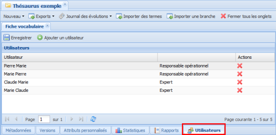

Suppression des utilisateurs
ProcédureSupprimer un utilisateur⚓
AttentionAttention⚓
Seuls l'administrateur général et les responsables opérationnels du vocabulaire peuvent gérer les utilisateurs.
Sélectionnez l'onglet
Utilisateursde laFiche vocabulaire.Exemple
L'interface de gestion des utilisateurs du vocabulaire s'affiche.
Cliquez sur le bouton
 à droite de la ligne d'un utilisateur pour le supprimer de la liste des utilisateurs du vocabulaire.
à droite de la ligne d'un utilisateur pour le supprimer de la liste des utilisateurs du vocabulaire.La ligne de l'utilisateur est supprimée de la liste.
Cliquez sur le bouton

Enregistrer.Vos modifications sont sauvegardées.